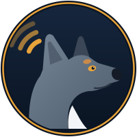

KELLY PAGE
KELLY PAGEYour radio, your mesh, one big friendly screen.
Kelly Page runs in Chrome or Edge. It turns a Tait P25 radio into a full station console, and puts LoRa mesh, APRS and your own GPS tracker in the same place. No installs, no subscriptions, no cost.

What's inside
ANYWHERE works for any ham in VK or ZL. P25X needs a Tait radio on the P25X network in Queensland.
LoRa Mesh ANYWHERE
MeshCore, Meshtastic and LoRa APRS nodes over USB, Bluetooth or Wi-Fi: chat, a live map, trace routes, packet journeys, repeater management, QR contact cards and a packet analyser.
APRS iGate ANYWHERE
Put MeshCore GPS trackers and their telemetry on aprs.fi. Ham stations only, your own list, dry run first, and impossible positions filtered out.
Mesh Buddy ANYWHERE
Build a GPS tracker from three parts (about $77) and flash it straight from Kelly in 70 seconds. Rides on the mesh as MeshPRS, shows on aprs.fi under your call.
P25 radio console P25X
Texts, calls, status, GPS and APRS, bulletins, weather, the P25X PBBS, RTTY, SSTV pictures, club cameras and even web pages, all over P25 data.
BLE Presence ANYWHERE
Bluetooth beacons and sensors around your home: arrive and leave alerts, pet tags, temperature, and a Bluetooth fox hunt.
SCADA trainers ANYWHERE
DNP3 over radio, explained by doing: a pumped-storage hydro plant and a gas turbine you can run, alarm and break, all simulated.
Three ways to run it
On your PC
Unzip and open it in Chrome or Edge. Plug your radio or LoRa node in by USB, or use the little bridge program for IP.
On a Raspberry Pi
Flash our ready-made image, plug in your radio, and Kelly runs 24/7 next to it. Open it from any computer in the house.
Just try it
The demo runs right here with a pretend radio and mesh. Click around; you can't break anything.